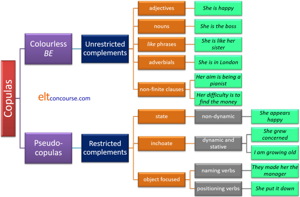

Copular and pseudo-copular verbs and their complements

If you have followed the initial plus guide to this section (new tab), which is much simpler, you will be familiar with:
I say, I say, I say. My dog's got no nose.
No nose? How does he smell?
Terrible!
Ha, ha. But there's an important language point buried in the
old joke. The joke, if there is one, relies on the fact that the
verb smell sometime operates as a lexical and sometimes as a copular verb.
Here we are dealing with the copular or linking use of the verbs in
question.
If that confuses you, try the simpler guide to this area first.
 |
Definitioncopula (n.) /ˈkɒ.pjʊ.lə/
|
Traditionally, a copula is defined as an item which links the subject
of a clause with its predicate, like this (subject underlined, copula in
bold black and
predicate in blue):
The book
is on the shelf
The car
is enormous
Peter
is a musician
That
is what I need
and so on.
In English, the linkage is achieved with verbs of one kind or another
but that need not be the case.
Some languages use a pronoun or set of pronouns to achieve the
link and in others (such as Korean) there may be a suffix which does
the same job. Some languages, such as most forms of Arabic, do
without a copula altogether and speakers of those languages may do
so in English, producing, for example:
*He teacher
which is, of course, perfectly comprehensible.
Japanese has a particle, da or desu, which
follows the predicate performing a copular function.
Romance languages (excluding French and Romanian) generally have
two copulas, one for permanent states and another for temporary
conditions so the translations of, e.g.:
Mary is happy
and
Mary is a teacher
will be different with different forms of the verb be
in each case.
There may, incidentally, be some disagreement among native
speakers of such languages concerning what constitutes a permanent
rather than temporary state but most get it right most of the time.
Languages which share this characteristic include Italian, Spanish,
Catalan, Portuguese and more.
Speakers of these languages may, at first, be slightly confused that
there is no distinction in the verb use in English between:
The book is old
and
The book is in my car
In many analyses a distinction is made between the
copula in English, the verb be and all other verbs which serve to
link the subject and the predicate such as appear, seem, look, grow and so on which are referred to as semi- or
pseudo-copular verbs.
In this guide we will shortly see why that should be the case.
In other analyses, these sorts of verbs are referred to as intensive verbs because they can only take one clause structures when acting as copulas. That structure is: SVC (Subject – Verb – Complement) although we can, as is the case with all clauses add an adjunct adverbial to get SVCA.
At the outset, we should make it clear that the complement of a
copula is not an adjunct. An adjunct is an omissible extra
piece of information in a verb structure. For example, in:
John waited at the bus stop
the adverbial at the bus stop is an adjunct and can be
omitted to leave a well-formed sentence.
However, in:
John was at the bus stop
we cannot omit the adverbial prepositional phrase because that
would leave a non-sentence in English.
For more, see the guide to adverbials, linked below.
 |
The colourless central copula and quasi-copular verbs |
The verb be is the least meaningful but most flexible of the
copular verbs in English.
It is the least meaningful, i.e., colourless, because unlike verbs such as taste,
appear, turn, grow or become, it serves purely to link subject to
complement and carries little intrinsic meaning.
It is, however, also the most flexible and can be followed by more types
of complement than the semi- and pseudo-copular verbs. For example:
- subject noun complement
He is the boss - adjective complement
She was unhappy with that - a subject noun complement linked with the preposition like
to show comparison
They are like their parents - prepositional phrase complement
She has been in London - adverb complement
She will be here - non-finite to-infinitive clause complement
His ambition had always been to make lots of money - non-finite clause with an -ing form of the verb
His aim was making lots of money (another )
We shall see later how these seven types of complementation affect which verbs can be used as copulas.
The pseudo-copular verbs fall into two categories.
- Verbs which indicate the current state of something
She felt unwell - Verbs which indicate a change in state which are known as
inchoate verbs (the term inchoate means not fully formed).
You may also see them described as inceptive verbs.
She became unwell
Like this:
| Current condition / state | Inchoate verbs |
|
act the fool appear unhappy be on the table feel sick keep busy lie on the lawn look miserable remain unhappy † represent the problem seem excessive smell revolting sound awful stand corrected stay calm taste like tomato turn up dead |
become involved come undone come out in spots end up rich get old go stale grow apprehensive fall ill prove impossible run to fat turn aggressive wax lyrical |
He represents the company in France
it is not a copula but in:
This figure represents the amount we have to pay
it is a pseudo-copula.
These two categories form teachable units but mixing them up can cause problems especially at lower levels.
 |
Modification of copulas |
The inchoate verbs allow a range of modification, especially with
manner adverbs, that is disallowed with those in the left-hand column.
For example:
He became gradually reconciled to the idea
It quickly went stale
but
*He looked rapidly miserable
*She stood slowly in the corner
and so on are not allowed because of the stative nature of the
verbs.
Current state verbs are subject to modification in other ways,
however, often with intensifying adverbials or those of time or
angle:
She definitely appeared unhappy
She really felt sick
It eventually proved impossible
They stubbornly remained dissatisfied
She unexpectedly fell ill on holiday
 |
Dynamic and stative uses |
There is a guide to dynamic and stative
uses of verbs on this site, linked from the list of related guides at
the end, but the distinction bears treatment here
because it is often stated that we do not use copular verbs dynamically.
We do not, therefore, say:
*He is being unhappy
*Jane is appearing sad
*I am remaining content
*It is smelling vile
*They are seeming clever
*It is tasting good
etc.
As a rule of thumb, that's true, but we do use a range of copular verbs dynamically, especially if:
- We need to emphasise a temporary condition. We can have,
therefore:
- He is stupid (permanent condition)
vs.
He is being stupid (current, non-permanent condition) - They felt sick (and remained that way for an
unstated period)
vs.
They were feeling sick (a temporary state) - It is kept in that cupboard (permanently)
vs.
It is being kept in that cupboard (for the moment but that may change) - Margate lies on the coast (permanent location)
vs.
She is lying on the lawn (temporary location)
- He is stupid (permanent condition)
- We need to express the inchoate nature of an event (column
two, above):
- I am becoming uneasy (changing from calm)
- She is turning aggressive (changing from peaceful)
- it's getting cold (changing from warm)
- I am growing old (changing from young)
Subject complements |
|
|
He is happy He is a happy man |
This is the simplest and most common way that copular verbs appear in
the language and the verb be is the most frequent way the
effect is achieved.
They are called subject complements because they refer solely to the
subject of the verb. Below, we consider the rarer object
complements.
There are two sorts:
- Adjective phrase complements
- Noun phrase complements
Adjective-phrase complements |
|
| Dolphins are intelligent |
The predicative use of adjectives is generally achieved in
English with the use of copulas and the most common is be.
Almost any adjective can be used in this way although there are some
restrictions which are discussed in some length in the guide to
adjectives. The restrictions include the intensifiers such as
entire, mere, sole, outright etc. which can never be used
predicatively and non-inherent adjectives as in, e.g.:
Mary is an old friend
which cannot be rephrased as
My friend Mary is old
and carry the same meaning.
For more, see the guide to adjectives, linked below.
However, the form of the complement is quite variable and takes a little learning and practice. In particular, the preposition which follows the adjective is unpredictable. Additionally, as we note below, the use of a participle adjective often gives the copular verb construction the sense of a passive. We get, therefore:
- about
She was happy about the result
He was annoyed about the interruptions
When used with a participle adjective, about can form a quasi-passive agent phrase and carry the same meaning as:
He was annoyed by the interruptions - at
She was good at chess
They were pleased at the result
When used with a participle adjective, at can form a quasi-passive agent phrase and carry the same meaning as:
They were pleased by the result - in
He was unfortunate in losing so narrowly
You are mistaken in believing that
This preposition does not act in a quasi-agentive construction although the expressions interested in gets close as in:
She was interested in the lecture
vs.
She was interested by the lecture - of
She was certain of her facts
I was convinced of the advantages
The preposition of is very rarely part of a quasi-agentive phrase. - on
She was keen on science at school
The figures were based on last year's
The preposition on does not act in a quasi-agentive construction. - to
I am answerable to my employers
I am opposed to the idea
The preposition to does not act in a quasi-agentive construction. - with
She was sick with worry
They were enchanted with the play
When used with a participle adjective, with frequently forms a quasi-passive agent phrase and carries the same meaning as:
They were enchanted by the play
The be copula can, as we see, link any of these
adjectives with the noun subject and form a predicative adjective or
quasi-passive structure because it carries no semantic information.
The pseudo-copulas seem, appear, sound, taste, feel, look,
become, end up, get, grow can be used with any appropriate
adjective complement.
However, the pseudo-copulas do not all function in all cases for
semantic reasons or because they imply that the adjective is being
used dynamically and is under the control of the subject in some way.
- The verbs keep and turn work with few adjective
complements and with no participle adjectives.
They kept happy
*She kept annoyed
John turned nasty
*John turned disappointed - The verb remain can only be used with dynamic adjectives such as
annoyed, happy, mistaken etc.
He remained frustrated
*She remained tall - Semantically, too, the following are not allowed:
They proved pleased
He stayed good at chess
He felt keen
She turned unfortunate
that-clauses
Copulas with adjective complements can also be followed by that-clauses so we get:
- With an indicative finite clause:
I am surprised that you were so late
They seemed unhappy that she was disappointed - With the verb in the subjunctive mood:
I am happy that he be invited
They appeared happy that she go alone - With the putative should:
I am astonished that he should be so angry
Mary grew apprehensive that she should be alone in the house
Dummy it constructions
- It is sure to rain
- It is obvious he has no money
- It is possible that he will pay
- It seems he's quite happy
- It's getting late
- It appears she's going to be late
For more on dummy it constructions, see the guide to existential it and there clauses, linked below.
Infinitive constructions as adjective complements
These constructions are somewhat rarer. Here are some examples:
- You are kind to offer
- She seems hard to disagree with
- That man appeared too quick to anger
- She was livid to learn about it
- I became reluctant to take him with me
Below, we consider how infinitive constructions can form complements on their own.
Noun-phrase complements |
|
| Can that be a unicorn? |
Again, the colourless copula can be used with any appropriate
noun phrase so we get:
He is a pilot
She was an engineer
That man could be a spy
This program has been a great help
My dog is an idiot
and so on, and on.
The pseudo-copulas are not so obliging.
- The state copulas appear, seem, feel, keep, lie, look,
smell, sound, stand, taste cannot take a noun-phrase
complement so we do not allow:
*She seemed a doctor
*They sounded a prayer
*They tasted a house
When such verbs are used with noun phrase objects, they lose their copular function so:
I tasted the meal
They sounded a bell
are both dynamic verbs, not copulas, of course.
The inchoate copulas are restricted so we do not encounter:
*She got a surgeon
*They went a millionaire
*Mary turned a doctor
etc. - Five of these verbs can take a noun-phrase complement as in,
e.g.:
She acted the part
He proved a good teacher
He remained a pessimist all his life
He stayed a teacher until he retired
This represents a huge increase - Two inchoate copulas are also more useful in this respect.
We allow:
She became a professor
He ended up a prisoner
English is slightly unusual (at least among European languages)
in requiring the article with common noun complements so we do not
allow, e.g.:
*He became engineer
*He was barman
or
*I stayed amateur player
The exception is with some proper nouns for positions or when
the noun is unique (much the same thing) so we can
allow:
He became President
She ended up Mayor of the town
I'll be mother
The article use is uncommon so learners will often forget to
include it.
like + perception verbs
We saw above that be and pseudo-copular sense verbs can
be used with adjectival complements so we encounter, e.g.:
She appears delighted with her results
The cloth felt very soft
She looked really miserable
It seemed expensive
That smelt terrible
This tastes delicious
It is very sweet
etc.
However, when we want to use these verbs with a noun complement we
need to insert the preposition like to link the verb and
the complement. We do not allow:
*He looks a teacher
but we can have:
She looks like a businesswoman
They appeared like difficult customers
It felt like velvet
It might seem like a high price
It smelt like a farmyard
It tasted like ice cream
It is like honey
etc.
Occasionally, appear and seem can be used
without the preposition as in:
It seemed a difficult job
It appeared the best method
The other pseudo-copulas cannot do that and the safest bet is
to include the preposition.
The verb be can do almost anything so a noun-phrase without
like implies identity and one with like implies
similarity. Compare, e.g.:
It was a plate
It was like a plate
 |
Object complements |
| She was crowned Queen |
There is a small class of verbs which bear a close resemblance to
copulas insofar as they link the subject to the complement and cannot
have no complement at all and make sense.
The difference with these verbs is that part of the complement forms
the object of the copula.
They all imply some kind of naming or making and in that respect
they are causative verbs.
The (possibly complete) list is:
| announce appoint bring up call christen |
consider create crown declare elect |
make name proclaim pronounce think |
They have parallel constructions with subject complements which can make their meaning clear for learners. For example:
| Example | Parallel |
| She announced the food ready | The food was ready |
| They brought up their children considerate | The children were considerate |
| I christened the boat The Busted Flush | The boat was The Busted Flush |
| We consider John a good friend | John is a good friend |
| They crowned him King | He was King |
| They elected her a Senator | She was a Senator |
| I pronounced it good | It was good |
There is also a small class of verbs which require adverbial
complementation and they, too, because the complement is obligatory,
are copulas of a sort. They include:
keep, lay, place, plonk, position,
put, rest, set, site, situate, stay, stick, stuff.
Elsewhere on this site, these verbs are referred to a PP complement
verbs because they must take a complement adverbial
whereas most verbs of this sort take an optional
adverbial complement.
We cannot for example, allow:
*I put the book
*I sited the house
etc. without providing an adverbial to say where.
In a way similar to the list above, they have parallel constructions
which make the meanings clear:
| Example | Parallel |
| She put it in the corner | It was in the corner |
| They stuffed the suitcase under the bed | The suitcase was under the bed |
| I rested glass there | The glass was there |
| We situated the house on the hill | The house was on the hill |
| I stuck all the tools in the garage | The tools were in the garage |
| They set the meeting for six o'clock | The meeting was at six o'clock |
| We lay it on the floor | It was on the floor |
Unlike most copular verbs, these can all be used in the passive
voice (because they have an object):
She was made Queen
The ship was called The Queen
The meeting was set for six o'clock
The suitcase was stuffed under the bed
etc.
Although the complement is sometimes ellipted, it is always
understood so:
We elected him
is only understandable if the nature of the complement is
assumed.
With the second group, because the complement is an adverbial (often
a prepositional phrase) it cannot be omitted if the clause is to
retain any sense.
Adverbial-phrase complements |
|
| The huts stand by the sea |
The colourless be copula routinely links the subject and
an adverbial complement so we see:
She is at school
They have been in the garden
We will be there
They are in debt
etc.
(A small ambiguity arises with the prefect aspect forms of the verb
be in these sorts of clauses because the verb is also
routinely used as the past participle form of go in which
case it means something like go and return as in, for
example:
She has been to Margate
In the example above of
They have been in the garden
the interpretation could be that the verb is copular, linking the
subject and the adverbial complement, but it could also imply that
the people in question have visited the garden and returned.
In the latter case the verb is not a copula.)
Pseudo-copulas cannot do this so easily. Some can, so we
allow:
He kept out of sight
She remained in the college
They stayed under the bedclothes
We stood by the door
They ended up in the centre of town
It turned up in the bedroom
but none of the other verbs in the main list above can be used in this
way.
That is not a restriction which is intuitively obvious, of course,
and it doesn't apply to the verbs in the previous section which
always require adverbial complementation.
If we want to use the other pseudo-copulas appear and
seem in this way, the trick is to insert the be copula as in,
e.g.:
She appears to be out
They seem to be at the supermarket
Non-finite clause complements |
|
| My ambition is to make money |
There are two kinds of non-finite clauses which can act as complements with copular verbs:
- The to-infinitive
- The -ing form
Naturally, the colourless copula works with both so we see, e.g.:
Her hope was to see Paris in the spring
May aim is helping you to understand
The subject of the copula in this case has to be an abstract noun of some kind such as hope, ambition, joy, disappointment, aim etc.
Only a few of the pseudo-copulas work with non-finite clauses at
all. We may see:
His aim remained to see his property returned
His aim remained seeing his property returned
His ambition became training as a concert pianist
His ambition became to train as a concert pianist
She ended up taking a third degree at university
Of these, the last only works with the -ing form because of
the nature of the preposition, up. We cannot have:
*She ended up to take a third degree at
university
 |
A summary of the analysis |
The following leaves out a good deal of detail, in particular, the issues surrounding temporary and permanent states with all copulas. It should, therefore, serve as no more than an aide memoire.

 |
Teaching implications and ideas |
The problem with copular verbs is not so much with the form and
structure but with the types of complement that the verbs can take.
This section repeats in part but with some additions what has been said in the initial plus guide to
this area. If you have already followed that guide you don't need
most of it, but you do need to bear in mind that whenever a copula is the focus
of teaching, that you consider carefully what kinds of complement it can
take and alert your learners to any restrictions. As we have seen,
there are lots of them.
One issue for learners is that the same distinctions do not apply
universally across languages so they may be tempted to use adverbs with
copular verbs and produce sentences such as
*I feel badly.
Because there are so many verbs in English that act as copulas,
learners may become confused and fail to recognise them. However,
the range is also a resource which can be used to make texts more
interesting and vivid.
 |
Making texts more interesting |
Here's an example which can be adapted for a lesson on the area at any level.
Text 1: using only to be as the copula, in black italics.
Tom was late at the
restaurant and Mary was
unhappy because she was alone
at the table for an hour. Tom was
apologetic but excused himself by saying he
had been late at work because the job
was more difficult than he
expected.
Mary was unimpressed and said
she would not be so forgiving
next time.
Now replace the copular uses of be
with more interesting alternatives to see what effect it has on the
text.
Then click here for a
suggestion.
Text 2: using more interesting verbs as the copulas (one twice in slightly different meanings).
Tom turned up late at the
restaurant and Mary appeared unhappy
because she ended up alone at the
table for an hour. Tom grew
apologetic but excused himself by saying he
had stayed late at work because the job
proved more difficult than he
expected.
Mary remained unimpressed and said she
would not prove so forgiving next
time.
You can, naturally, make the exercise less
challenging by providing a list of pseudo-copulas that you want the
learners to use.
You can select from the list given above.
This exercise, incidentally, mixes choate and inchoate verbs and that
may, at least at first, be something you want to avoid.
One way to alert learners to the difference is to take the second text
and insert adverbs which may or may not be allowable. Like this:
In this text, there are some adverbs which may or may not be correct. Find the incorrect ones and correct them with something more appropriate:
Tom gradually turned up late at the
restaurant and Mary quickly appeared unhappy
because she slowly ended up alone at the
table for an hour. Tom rapidly grew
apologetic but excused himself by saying he had reluctantly stayed late at work because the job
quickly proved more difficult than he
expected.
Mary stubbornly remained unimpressed and said she
would not slightly prove so forgiving next
time.
The exercise alerts people to the two forms of pseudo-copulas.
 |
Getting concepts clear |
| turning nasty |
Because English has such a range of copular verbs, it makes sense to
raise learners' awareness of the two fundamental types (see above for a
list):
those which describe a present state and those which describe the
transitions from one state to another.
For example:
| Put the verbs in red in the correct column and mark the sentences on the right as correct or wrong | Correct
|
||
| Example | was | was changing | |
| It appeared impossible | The job is
appearing impossible The job appears impossible |
||
| It became impossible | The calculation
is becoming impossible The calculation becomes impossible |
||
| The weather turned cold | The climate is
turning warmer The climate turned warmer |
||
| The weather remained cold | The water is
remaining cold The water remains cold |
||
| The crocodile seemed aggressive | It seems
aggressive It is seeming aggressive |
||
| The crocodile grew aggressive | The weather grew
colder The weather was growing colder |
||
etc.
 |
Helping learners to notice copular verbs |
Because languages differ in how copular verbs are used and in what
verbs qualify as copulas, we need to make sure that when learners
encounter them, in a written or spoken text, that we draw their
attention to them in some way or they will pass unnoticed.
The test above, replacement with the verb be, is one way to do
this. Exercises like this may help:
| Which verbs in red can we replace with a form of be? | ||
| Sentences | yes
|
no
|
| It appeared impossible | ||
| It became impossible | ||
| The weather turned cold | ||
| He looked ill | ||
| She is looking tired | ||
| She looked in the cupboard | ||
| They seem rich | ||
| They grew old together | ||
etc.
 |
Dealing with like |
| She is so like her sister |
As we noted, the use of like is sometimes troublesome and leads to error. It can be tackled with transformation exercises:
| Rephrase these sentences using or removing like. You can use a noun or a clause to make the changes. | |
| Examples | |
| Maud and Elizabeth look similar | Maud looks like Elizabeth Elizabeth looks like Maud |
| It tastes creamy | It tastes like it is made with cream It tastes like cream |
| (identical) | She sounds exactly like her mother |
| It looks fierce | (animal) |
| (sugary) | It tastes like sugar |
| He seems unhappy | (man) |
| He seems like an intelligent child | |
etc.
The issue with this word is one of gradience because it slides easily
between word classes, acting as a conjunction, an adjective, a
preposition (here) and even a pro-form. Even when it is a
preposition, it retains its adjective characteristic in being modifiable
by an adverb (as in the example with so above).
 |
Selecting appropriate complements |
The restrictions we identified above concern mostly
pseudo-copular verbs because the colourless copula is far more
flexible (and, therefore, common).
Exercises which can alert people to the acceptable and
non-acceptable uses can be a spur to discussion and discovery of the
semantic features that control the choices.
For example:
Choose the sentence completions on the right which are possible to finish the sentence beginnings on the left.
| 1 | He appeared ... | a | ... desperately unhappy |
| 2 | She was ... | b | ... in trouble |
| 3 | They stayed ... | c | ... to be a problem |
| 4 | Mary stood ... | d | ... aggressive |
| 5 | John became ... | e | ... to be a singer |
| 6 | It proved ... | f | ... a doctor |
| 7 | It tastes ... | g | ... by her father |
| 8 | That smells ... | h | ... making it in Hollywood |
| 9 | It turned ... | i | ... colder and colder |
| 10 | Her aim remained ... | j | ... of pineapple |
This sort of exercise is authorable, of course, so you can select the kinds of copulas and the forms of complements on which you want to focus.
| Related guides | |
| dynamic and stative | for the distinctions between these concepts in verb use |
| adjectives | this guide includes much more about possible adjective complementation and non-predicative-use adjectives |
| the passive | for more on quasi-agentive structures |
| existential it / there clauses | for the guide to how these dummy subjects are used |
| verb types and clause structures | for a more technical guide to the six common clause types |
| adverbials | for a little more on adjuncts vs. adverbials which cannot be omitted |